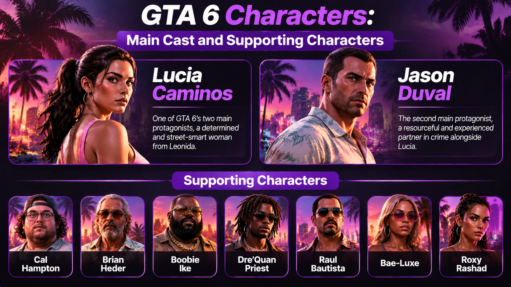

GTA 6 characters are a major part of Rockstar Games' latest Grand Theft Auto adventure. The game introduces two central protagonists, Lucia Caminos and Jason Duval, alongside a large supporting cast living across the fictional state of Leonida. From experienced criminals and local business owners to musicians and social media personalities, each character contributes to the game's connected world.
Rockstar has also published the official GTA VI credits, confirming the performers behind its leading characters and several supporting roles. This guide covers GTA 6 characters names, playable protagonists, Lucia and Jason's backgrounds, confirmed performers and the supporting cast players should know.
GTA 6 Characters Names: Complete Overview
The GTA 6 characters include two main protagonists and numerous supporting personalities. Jason Duval and Lucia Caminos are at the center of the story, while other characters connect them to Leonida's criminal networks, music industry, businesses and local communities.
Here are some of the important characters introduced through Rockstar's official website and credits:
| Character name | Credited performer | Character type |
|---|---|---|
| Lucia Caminos | Manni L. Perez | Main protagonist |
| Jason Duval | Dylan Rourke | Main protagonist |
| Cal Hampton | Bobby Moynihan | Supporting character |
| Brian Heder | Stephen Root | Supporting character |
| Lori Heder | Orlagh Cassidy | Supporting character |
| Boobie Ike | Mike Forbs | Supporting character |
| Dre'Quan Priest | Naiqui Macabroad | Supporting character |
| Bae-Luxe | Hood Brat | Supporting character |
| Roxy Rashad | Krissy Celess | Supporting character |
| Raul Bautista | Manny Perez | Supporting character |
| Mia Caminos | Roselyn Sanchez | Supporting character |
| Donnie | Brad Carter | Supporting character |
| Katerina Rosselli | Edwina Rai | Supporting character |
| Kenton Rees | Machel Montano | Supporting character |
| Vicki | Taryn Manning | Supporting character |
| Moses "Mo" Watkins | Aaron Morton | Supporting character |
This is a selection of named characters from Rockstar's published main cast credits, not an exhaustive list of every person appearing in the game.

GTA 6 Playable Characters: Meet the Two Protagonists
The GTA 6 playable characters at the center of the story are Lucia Caminos and Jason Duval. Their relationship and criminal ambitions drive the main narrative across Leonida.
Rockstar presents the two as partners who must depend on each other after an easy score goes wrong and pulls them into a much larger criminal conspiracy.
Lucia Caminos
Lucia Caminos is one of the two central protagonists in Grand Theft Auto VI. Her story begins with a difficult past, including time spent in the Leonida Penitentiary.
According to Rockstar's official character biography, Lucia learned to fight from her father at a very young age. Her determination to protect her family eventually led to her imprisonment.
After leaving prison, Lucia becomes more careful about the decisions she makes. She wants a better life for herself and her family, but she is prepared to take action rather than simply wait for opportunities.
Her relationship with Jason becomes an important part of her journey. Lucia sees their partnership as a possible route toward the life she wants, although their criminal activities create serious risks.
Jason Duval
Jason Duval is the second protagonist and Lucia's central partner. He grew up around criminals and dishonest people, making him familiar with the less respectable side of Leonida.
Rockstar's official biography explains that Jason spent time in the Army while trying to move away from his troubled teenage years. After leaving military service, he settled in the Keys and began working for local drug runners.
Jason appears to want a relatively easy life, but his connection with Lucia makes his future more complicated. Their relationship places him in situations where loyalty, ambition and personal safety become increasingly important.
Together, Jason and Lucia provide two perspectives on the criminal world of Leonida.
GTA 6 Dual Protagonists Jason and Lucia: How Do They Work Together?
The GTA 6 dual protagonists Jason Lucia concept gives the story its central identity. Instead of following a single main character, the game focuses on two individuals whose lives become closely connected.
Jason and Lucia have different backgrounds, experiences and motivations. Lucia has a difficult history involving prison and family responsibilities, while Jason has experience with military service and local criminal networks.
Their partnership is built around shared ambitions and the belief that working together gives them a better chance of changing their circumstances.
Rockstar's official description highlights how an apparently straightforward score goes wrong, placing the pair in the middle of a criminal conspiracy extending across Leonida.
Their relationship is therefore more than a simple partnership between two criminals. It is a major part of the game's narrative, connecting personal decisions with the wider criminal world.
GTA 6 Lucia Actress: Who Plays Lucia Caminos?
The GTA 6 Lucia actress is Manni L. Perez, whose role is confirmed in Rockstar Games' official credits.
Perez portrays Lucia Caminos, one of the game's two main protagonists. Her performance brings the character's personality, determination and emotional story to life.
Before the official credits became available, fans spent considerable time discussing possible performers behind Lucia. Rockstar's published cast list has now provided an authoritative answer.
The confirmation is especially important for players searching for the person behind Lucia rather than simply looking for information about the fictional character.
Manni L. Perez is credited directly alongside Lucia Caminos in the main cast section of Rockstar's official credits.
GTA 6 Jason: Who Plays Jason Duval?
Jason Duval is portrayed by Dylan Rourke, according to Rockstar's official GTA VI credits.
The actor's involvement became public when the game's credits were released. His role had previously generated considerable discussion among fans who were trying to identify the performer through trailer appearances and character comparisons.
Jason is presented as someone who wants a quieter life but repeatedly becomes involved in increasingly complicated situations.
His history around criminals, military experience and work with local drug runners helps explain his position within Leonida's criminal environment.
Who Plays Jason in GTA 6?
Dylan Rourke plays Jason Duval in Grand Theft Auto VI. Rockstar's official credits list Rourke directly beside Jason's character name, confirming the casting.
This confirmation ends much of the speculation that surrounded Jason's performer before the game's release.
GTA 6 Supporting Characters and Their Roles
The GTA 6 supporting characters help make Leonida feel like a populated world rather than a setting built exclusively around its two protagonists.
Rockstar has introduced several personalities connected to local businesses, music, criminal activity and everyday life.
Cal Hampton
Cal Hampton is a friend of Jason and an associate of Brian Heder. He prefers staying at home and monitoring Coast Guard communications rather than becoming involved in unnecessary trouble.
His personality is shaped by paranoia, online information and an interest in observing what happens around him.
Brian Heder
Brian Heder is an experienced drug runner who operates through his boatyard in the Leonida Keys. He represents an older generation of criminals who understand how to maintain their operations while letting other people handle difficult work.
Brian also allows Jason to live at one of his properties, provided Jason helps with local shakedowns.
Boobie Ike
Boobie Ike is a well-known Vice City personality who has built a business empire connected to real estate, entertainment and a recording studio.
He is closely involved with the local music industry and has a partnership with Dre'Quan Priest.
Dre'Quan Priest
Dre'Quan Priest is an ambitious music entrepreneur who wants to establish himself in the entertainment business.
Although he previously dealt on the streets, his main ambition is to succeed in music. His connection with Boobie Ike and Only Raw Records places him within Vice City's music scene.
Bae-Luxe and Roxy Rashad
Bae-Luxe and Roxy Rashad perform together as Real Dimez. They are longtime friends who use music and social media to build their popularity.
Their connection with Only Raw Records introduces another part of Leonida's entertainment world.
Raul Bautista
Raul Bautista is an experienced bank robber known for his confidence, charm and willingness to take risks.
He looks for people who are prepared to participate in high-reward criminal operations, although his reckless approach can increase the danger for everyone involved.
Why GTA 6 Characters Matter to the Story
The characters in Grand Theft Auto VI connect the game's different environments and storylines.
Jason and Lucia provide the main narrative, while supporting personalities introduce additional relationships, ambitions and conflicts.
The criminal connections around Brian, the entertainment businesses associated with Boobie and Dre'Quan, and the music careers of Real Dimez show how different parts of Leonida fit together.
This variety also helps distinguish the characters from one another. Not everyone is directly involved in the same criminal activities, and different personalities have their own priorities.
As players explore the world, these relationships provide context for the events surrounding the two protagonists.
Conclusion
GTA 6 characters include a diverse cast led by Lucia Caminos and Jason Duval. Both protagonists have different backgrounds, but their partnership places them at the center of a criminal conspiracy across Leonida.
Rockstar's official credits confirm Manni L. Perez as Lucia and Dylan Rourke as Jason. Other notable characters include Cal Hampton, Brian Heder, Boobie Ike, Dre'Quan Priest, Real Dimez and Raul Bautista.
Together, these characters give Grand Theft Auto VI a connected world filled with different personalities, relationships and ambitions. As players discover more of Leonida, the supporting cast helps make the story more engaging and gives the setting its own identity.
Frequently Asked Questions About GTA 6 Characters
How many playable characters are in GTA 6?
GTA 6 has two central playable protagonists: Lucia Caminos and Jason Duval.
What are the GTA 6 characters' names?
The main characters include Lucia Caminos, Jason Duval, Cal Hampton, Brian Heder, Boobie Ike, Dre'Quan Priest, Raul Bautista, Bae-Luxe and Roxy Rashad.
Who plays Lucia in GTA 6?
Manni L. Perez portrays Lucia Caminos, as confirmed by Rockstar's official credits.
Who plays Jason in GTA 6?
Dylan Rourke portrays Jason Duval, according to Rockstar's official credits.
Are Jason and Lucia a couple in GTA 6?
Jason and Lucia are central partners whose relationship and shared criminal ambitions drive the main story.
Is Lucia the main character in GTA 6?
Lucia is one of the two main protagonists, alongside Jason Duval.
Who is Cal Hampton in GTA 6?
Cal Hampton is Jason's friend and an associate of Brian Heder who prefers staying at home and monitoring communications.
Who is Brian Heder in GTA 6?
Brian Heder is an experienced drug runner operating through a boatyard in the Leonida Keys.
Who are Real Dimez in GTA 6?
Real Dimez is a musical duo consisting of Bae-Luxe and Roxy Rashad.
Who is Raul Bautista in GTA 6?
Raul Bautista is an experienced bank robber who looks for people willing to participate in high-risk criminal operations.
Visit our GTA VI Characters category for more character profiles, or return to the GTA VI PC World homepage.
Independent fan and information website. Not affiliated with Rockstar Games.